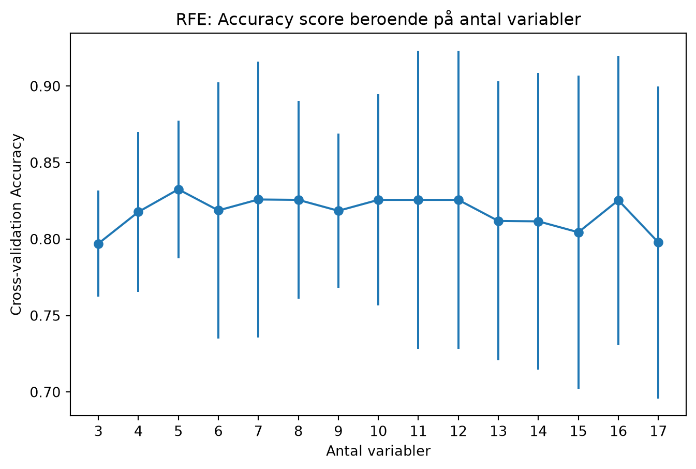

| Variabel | Beskrivning |
|---|---|
| livslängd | Medellivslängd |
| suicid_100k | Antal suicid per 100 000 invånare |
| fetma_andel | Andel personer med fetma i befolkningen |
| hdi | Human Development Index (HDI) |
| demokratiindex | Indexvärde för hur demokratiska länders valprocesser är på en skala mellan 0 och 1 |
| co2_percapita | CO₂-utsläpp per capita |
| energi_percapita | Energianvändning per capita |
| utbildning_andel_gdp | Utbildningsutgifter som andel av BNP |
| skatt_andel_bnp | Skatteintäkter som andel av BNP |
| statligautgifter_andel_bnp | Statliga utgifter som andel av BNP |
| gini | Gini-koefficient – ett mått på ekonomisk ojämlikhet på en skala mellan 0 och 1 |
| gdp_per_capita | BNP per capita |
| handel_andel_gdp | Handel som andel av BNP |
| livstillfredsställelse | Genomsnittlig livstillfredsställelse på en skala mellan 0 och 10 |
| barn_per_kvinna | Genomsnittligt antal födda barn per kvinna |
| korruption_index | Indexvärde för upplevd politisk korruption på en skala mellan 0 och 1 |
| mord_percapita | Antal mord per capita |
| död_i_konflikt_percapita | Antal döda i konflikter per capita |
Prediktiv analys
Frågeställning
I vilken utsträckning kan ett lands demokratiska styrelseskick förutsägas utifrån ett antal samhällsindikatorer?
Databearbetning
Analyserna genomfördes för år 2021, eftersom detta var det år då flest länder hade tillgängliga värden för de inkluderade samhällsindikatorerna.
Som målvariabel användes en binär klassificering av länder som demokratier respektive autokratier baserad på Our World in Data. Efter att länder med saknad information om styrelseskick exkluderats återstod 179 länder. Klassen var ungefär jämnt fördelad mellan demokratier och autokratier, vilket innebar att ingen balansering av klasserna bedömdes vara nödvändig.
Variabeln Democracy Index exkluderades eftersom den direkt mäter det utfall som modellen skulle predicera. Human Development Index (HDI) exkluderades också eftersom det är ett sammansatt index som bygger på flera variabler som redan ingick i analysen (utbildningsnivå, förväntad livslängd och BNP per capita).
Därefter exkluderades variabler med mer än 25 procent saknade värden, vilket resulterade i 17 återstående prediktorer. Kvarvarande saknade värden imputerades med respektive variabels median. Slutligen standardiserades samtliga prediktorer för att göra variabler med olika skalor jämförbara.
Beskrivning av analysens variabler
Prediktion med maskininlärningsmodeller
Metod
Underlaget delades in i tränings- och testdata, där 20 procent av alla data användes som testdata. Efter att maskininlärningsmodellerna tränats på träningsdatan användes testdatan för att testa hur väl de olika modellerna lyckades predicera huruvida respektive land var en demokrati eller autokrati.
För att förbättra modellernas tillförlitlighet användes Stratifierad K-Fold som metod, vilket innebär att man delar upp tränings- och testdatan i flera delar (fem delar valdes i detta projekt) utifrån den valda fördelningen för att utvärdera modellen på flera uppdelningar, vilket minskar risken för att resultatet påverkas av en enda slumpmässig indelning.
För att optimera modellerna användes även GridSearchCV, vilket är en metod för att automatisera optimeringen av parametrar för varje maskininlärningsmodell, där olika kombinationer av parametrar testas för att bestämma vilken parameterkombination som skapar den bästa modellen.
Maskininlärningsmodeller
Logistisk regression
Logistisk regression är en linjär klassificeringsmodell som uppskattar sannolikheten att en observation tillhör en viss klass genom en logistisk funktion. Modellen skattar en koefficient för varje variabel och kombinerar dessa till ett prediktionsvärde. Dess främsta styrka är att den är enkel att tolka och fungerar väl när sambanden mellan prediktorer och utfall är ungefär linjära.
Gradient Boosting Tree
Gradient Boosting bygger successivt upp en modell genom att träna många små beslutsträd där varje nytt träd fokuserar på de observationer som tidigare träd klassificerat fel. Modellen kan fånga komplexa och icke-linjära samband och uppnår ofta hög prediktionsförmåga. Nackdelen är att den är mer beräkningsintensiv och kan vara känsligare för överanpassning.
K-Nearest-Neighbors
K-Nearest Neighbors klassificerar en observation utifrån vilka observationer som ligger närmast i utifrån de variabler som studeras. Klassen bestäms av majoriteten bland de “närmaste grannarna”.
Random Forest
Random Forest bygger ett stort antal beslutsträd på olika slumpmässiga delmängder av data och prediktorer. Den slutliga klassificeringen bestäms genom majoritetsröstning mellan träden. Metoden är robust mot brus och kan modellera komplexa samband, samtidigt som den minskar risken för överanpassning jämfört med ett enskilt beslutsträd.
Stacking Classifier
Stacking kombinerar flera olika maskininlärningsmodeller genom att använda deras prediktioner som indata till en ny modell. Tanken är att olika modeller fångar olika mönster i datan och att en kombination därför kan ge bättre prediktionsförmåga än någon enskild modell. I detta projekt användes en mix av logistisk regression och random forest för att träna modellen, för att sedan använda random forest för att göra prediktionen.
Resultat
Modellerna jämfördes utifrån deras genomsnittliga accuracy vid femfaldig stratifierad cross-validation (CV-score). Till skillnad från ett enskilt tränings-/testsplit bygger detta mått på flera olika uppdelningar av träningsdatan och ger därför en mer robust uppskattning av modellernas förväntade generaliseringsförmåga.
| Model | Mean CV accuracy |
|---|---|
| Logistic Regression | 0.833000 |
| KNN | 0.804000 |
| Random Forest | 0.789000 |
| Gradient Boost | 0.754000 |
| Stacking | 0.761000 |
Logistisk regression uppvisade den högsta genomsnittliga CV-scoren och valdes därför som huvudmodell i den fortsatta analysen.
Att logistisk regression presterade bäst kan bero på flera faktorer. För det första kan sambanden mellan samhällsindikatorerna och ett lands demokratiska styrelseskick till stor del beskrivas med gradvisa, ungefär linjära samband. För det andra är datasetet relativt litet, vilket kan göra det svårare för mer komplexa modeller, såsom Random Forest och Gradient Boosting, att identifiera stabila icke-linjära mönster. En enklare modell kan därför få bättre generaliseringsförmåga.
I den bäst presterande modellen (logistik regression) såg koefficienterna ut enligt nedan, sorterat i storleksordning. Eftersom underlaget är standardiserat går de att jämföra med varandra, och kan tolkas som ett mått på hur mycket oddset för att klassificeras som en demokrati förändras när en prediktor ökar med en standardavvikelse, givet att övriga variabler hålls konstanta.
| feature | coefficient | abs_coef |
|---|---|---|
| korruption_index | -0.949908 | 0.949908 |
| statligautgifter_andel_bnp | 0.478844 | 0.478844 |
| handel_andel_gdp | -0.360076 | 0.360076 |
| barn_per_kvinna | -0.354370 | 0.354370 |
| co2_percapita | -0.334985 | 0.334985 |
| livstillfredsställelse | 0.334624 | 0.334624 |
| andel_kvinnor_arbete | 0.295103 | 0.295103 |
| energi_percapita | -0.238946 | 0.238946 |
| skatt_andel_bnp | 0.219466 | 0.219466 |
| fetma_andel | 0.196592 | 0.196592 |
| mord_percapita | 0.186017 | 0.186017 |
| utbildning_andel_gdp | 0.137091 | 0.137091 |
| gdp_per_capita | -0.094531 | 0.094531 |
| död_i_konflikt_percapita | -0.079430 | 0.079430 |
| livslängd | 0.054875 | 0.054875 |
| skolår | -0.036038 | 0.036038 |
| suicid/100k | -0.024193 | 0.024193 |
Reducering av den bästa modellen
Nästa steg var att försöka optimera den bästa modellen (logistisk regression) för att hitta den modell med så få variabler som möjligt, för att försöka hitta de variabler som är viktigast för att ge samma prediktionsförmåga som modellen som helhet.
RFE-analys
Recursive Feature Elimination (RFE) användes för att identifiera den minsta uppsättning variabler som bibehöll hög prediktionsförmåga. Metoden tränar modellen upprepade gånger och eliminerar successivt den minst betydelsefulla prediktorn tills önskat antal variabler återstår. För varje antal variabler beräknades den genomsnittliga accuracyn med hjälp av cross-validation.
Nedan presenteras en figur som illustrerar modellens Accuracy-score när den använde mellan 3-17 variabler i analysen.

Ur RFE-analysen framkom att modellen presterade bäst när 5 variabler inkluderades.
Resultat
RFE identifierade en reducerad modell med 5 variabler som uppnådde den högsta genomsnittliga accuracyn vid cross-validation. Variablerna och deras koefficienter presenteras nedan.
| feature | coefficient | abs_coef |
|---|---|---|
| korruption_index | -2.093554 | 2.093554 |
| statligautgifter_andel_bnp | 1.338240 | 1.338240 |
| co2_percapita | -1.270246 | 1.270246 |
| livstillfredsställelse | 1.052315 | 1.052315 |
| handel_andel_gdp | -0.977180 | 0.977180 |
När den reducerade modellen applicerades på testdatan lyckades den gissa rätt 77.8 procent av gångerna. Modellens precision var 86.7 procent, medan recall uppgick till 68.4 procent. Detta innebär att de länder som modellen klassificerade som demokratier oftast också var demokratier, men att modellen samtidigt missade en relativt stor andel av de faktiska demokratierna. Modellen tenderade därmed att vara försiktig med att klassificera ett land som demokrati.
| Model | Accuracy | Precision | Recall | F1 |
|---|---|---|---|---|
| Logistic Regression | 0.778000 | 0.867000 | 0.684000 | 0.765000 |
Slutsats
Resultaten visar att 5 samhällsindikatorer innehåller betydande information om ett lands demokratiska styrelseskick. Den reducerade logistiska regressionsmodellen uppnådde en genomsnittlig accuracy på 83.3 procent vid cross-validation, vilket indikerar att demokratier och autokratier i stor utsträckning kan särskiljas utifrån de inkluderade variablerna. När modellen därefter utvärderades på det separata testsetet uppnåddes en accuracy på 77.8 procent.